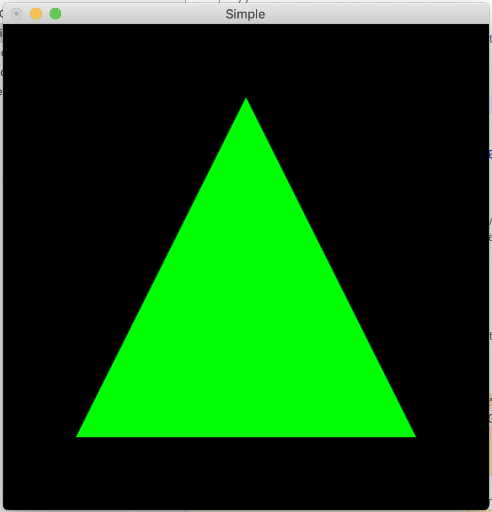

OpenGL学习笔记（二）渲染管线、FreeGLUT&GLEW、简单示例
1. 渲染管线
- 主要整理自[1]
图形渲染管线（Graphics Pipeline）
OpenGL是一个3D图形库，即其中的所有事物都存储在3D空间中，而屏幕和窗口中则是显示为2D像素，图形渲染管线的作用就是实现2D坐标和3D坐标之间的互相转换。有以下两个部分：
- 将3D坐标转换为2D坐标；
- 将2D坐标转变为实际有色的像素。
图形渲染管线的各个阶段的展示图如下：

着色器（Shader）是在渲染管线中，每个阶段上运行处理数据的小程序。OpenGL着色器是用OpenGL着色器语言（OpenGL Shading Language, GLSL）写成的。
接下来将逐一介绍渲染管线的各个阶段。
顶点数据（Vertex Data）
顶点数据作为图形渲染管线的输入，是一系列顶点（Vertex）的集合。
顶点是一个3D坐标数据的集合，用顶点属性（Vertex Attribute）表示。
OpenGL中指定的坐标都是3D坐标，但只有在标准化设备坐标（Normalized Device Corrdinates NDC，即三个轴坐标都在-1.0到1.0的范围内）范围内的坐标才能呈现在屏幕上。
- 标准化设备坐标之后会转化为屏幕空间坐标（Screen-space Coordinates），通过glViewport函数提供的数据，进行视口变换（Viewport Transform）完成。
顶点数据定义后被传入顶点着色器中，会在GPU上创建内存用于存储顶点数据。通过顶点缓冲对象（Vertex Buffer Objects VBO）管理此内存，它会在GPU内存中存储大量顶点，然后批量发给显卡。
顶点数组对象（Vertex Array Object, VAO）
- 任何随后的顶点属性调用都会储存在这个VAO中。这样的好处就是，当配置顶点属性指针时，你只需要将那些调用执行一次，之后再绘制物体的时候只需要绑定相应的VAO就行了。这使在不同顶点数据和属性配置之间切换变得非常简单，只需要绑定不同的VAO就行了。

顶点着色器（Vertex Shader）
- 顶点着色器是图形渲染管线的第一个部分，把一个单独的顶点作为输入。主要作用：
- 把3D坐标转换为另一种3D坐标；
- 对顶点属性进行一些简单的处理。
图元装配（Primitive Assembly）
- 将顶点着色器输出的所有顶点作为输入，将所有的点装配成制定图元的形状。
几何着色器（Geometry Shader）
- 几何着色器把图元形式的一系列顶点的集合作为输入，可以通过产生新顶点构造出新的图元来生成其它形状。
光栅化（Rasterization）
- 光栅化把图元映射成对应的像素，生成片段（Fragment）。在片段着色器运行之前，会执行剪裁（Clipping）来提升执行效率。
片段着色器（Fragment Shader）
- 片段着色器的主要目的是计算一个像素的最终颜色，也包含3D场景的数据（如光照、阴影、光的颜色等）。
Alpha测试和混合（Blending）
- 此阶段检测片段对应的深度，来判断这个像素对应其它物体的相对位置。也会检查alpha值来对物体进行混合。
2. FreeGLUT库 & GLEW库 配置
库简介
- FreeGLUT库
- 由于GLUT项目已被废弃（不再维护，无法修改），FreeGLUT是GLUT的一个完全开源替代库。
- GLEW库
- OpenGL扩展库，用于帮助C/C++开发者初始化扩展（OpenGL扩展功能）并书写可移植的应用程序。
安装
安装homebrew
由于之前已经安装过了homebrew，是否当时使用的是以下命令已经不太清楚了，如果有问题 ，可以在网上寻找。
$ ruby -e "$(curl -fsSL https://raw.githubusercontent.com/Homebrew/install/master/install)"安装FreeGLUT
$ brew install freeglut 安装中可能会提示需要先安装XQuartz，此时同样照着提示来安装，完成后再次brew即可。
安装GLEW
$ brew install glew 安装中可能会由于没有读写目录的权限的提示，此时只要按照终端的提示操作之后就可以了。
安装后的库
brew安装的目录在/usr/local/Cellar下，之后在Xcode中的配置会用到。
Xcode中的配置
打开Xcode，新建一个Command Line Tool项目。
在Build Settings中的Search Paths加入头文件、库文件搜索路径。
在Build Phases中Link Binary With Libraries中加入库
不知为何上步完成后仍是无法搜索到，只能手动添加文件了，另外不要忘了基本库OpenGL.framework哦。
3. 简单示例
示例代码
代码来自计算机图形学课程的讲义，绘制一个简单的三角形。
#include <GL/glew.h> #include <GL/glut.h> void doMyInit() { glClearColor( 0.0, 0.0, 0.0, 0.0); // Set the clear color to black } void mydisplay() { glClear( GL_COLOR_BUFFER_BIT); // Clear the frame buffer glColor3f( 0.0, 1.0, 0.0); // Set current color to green glBegin( GL_TRIANGLES); // Draw the triangle glVertex2f( -0.7, -0.7); glVertex2f( 0.7, -0.7); glVertex2f( 0, 0.7); glEnd(); glFlush(); // Force to display the new drawings immediately } int main (int argc, char* argv[]) { // initialize glutInit(&argc,argv); glutInitDisplayMode(GLUT_RGB | GLUT_SINGLE); glutInitWindowSize(500,500); glutInitWindowPosition(50,50); glutCreateWindow("Simple"); glewInit(); doMyInit();//define callback functions glutDisplayFunc(mydisplay); glutMainLoop(); //main event loop }
然而。。。
结果是无法成功跑出结果，显示如下：
尝试多次后，放弃了，似乎是因为FreeGLUT无法在Mac上编译shader，只能重新改回原生的GLUT.framework了。（在03中再次证实真的无法使用，还浪费了时间，哭了）
修改后
- 代码部分
- 将 #include <GL/glut.h> 改为 #include <GLUT/GLUT.h>
- Build Phases中改为
运行结果
- 关于FreeGLUT的问题，等之后遇到无法解决时再加以考虑了，汗汗，目前只找到[4]。
参考资料
[1]: https://learnopengl-cn.github.io/01%20Getting%20started/04%20Hello%20Triangle/ “LearnOpenGL CN - 你好，三角形”
2: https://www.cnblogs.com/fanghao/p/7559768.html “Mac使用Xcode配置openGL – 潇雨危栏”
3: https://www.cnblogs.com/leojason/p/9619193.html “OpenGL学习之旅01—Xcode+OpenGL环境配置 – LeoJason”
4: https://blog.csdn.net/fqrq88918329/article/details/50154863 “MAC OS上使用OpenGL遇到的大坑 – 热心的李大妈”